Reproducibility in Management Science
(with M. Fišar, B. Greiner, E. Katok, A. Ozkes, and the Management Science Reproducibility Collaboration)
Christoph Huber
25 January 2024
Outline
About me
Background
Reproducibility in Management Science
Future directions
About me
Christoph Huber
- PhD in 2021 at University of Innsbruck
- Since Sep. 2021: Postdoc at WU Vienna
Research:
- experimental methods \(\longleftrightarrow\) financial economics
- generalizability, replicability, and credibility in (social science) research
Background
- experimental methods \(\longleftrightarrow\) financial economics
- generalizability, replicability, and credibility in (social science) research
Background
- experimental methods \(\longleftrightarrow\) financial economics
- generalizability, replicability, and credibility in (social science) research
Generalizability:
- e.g.: Do experimental results with student participants hold in the field / with real people?
- Weitzel, Huber, Huber, et al. (RFS): Bubbles and Financial Professionals
- lab-in-the-field experiment with financial professionals
Background
- experimental methods \(\longleftrightarrow\) financial economics
- generalizability, replicability, and credibility in (social science) research
Replicability:
- e.g.: Does a(n experimental) phenomenon hold in different data set?
- Füllbrunn, Huber, Eckel, et al. (JFQA): Heterogeneity of Beliefs and Trading Behavior: A Reexamination
- reexamination of previous results with 255 instead of 6 experimental markets
Background
- experimental methods \(\longleftrightarrow\) financial economics
- generalizability, replicability, and credibility in (social science) research
Credibility:
e.g.: Can published results be recreated (reproduced) from the original code and data?
- minimum criterion for the credibility of scientific results
- minimum criterion for the credibility of scientific results
This paper:
\(\rightarrow\) Reproducibility in Management Science
Aim
Estimate reproducibility in Management Science, overall and across different fields
Compare reproducibility before/since the introduction of a code and data disclosure policy
Identify main reasons for non-reproducibility
Introduction
Scientific results need to be replicable, such that policies/actions can be based upon them (Ioannidis, 2005; Ioannidis et al., 2013).
Replication Crisis
- Open Science Collaboration (2015)
- 36% of 97 psychology papers with significant effects replicated
- Camerer et al. (2016)
- 61% of 18 economics lab experiments replicated (with 66% of the original effect size, on average)
- Camerer et al. (2018)
- 62% of 21 social science experiments in Nature/Science replicated
Introduction
Scientific results need to be replicable, such that policies/actions can be based upon them (Ioannidis, 2005; Ioannidis et al., 2013).
Replication Crisis
- Open Science Collaboration (2015)
- 36% of 97 psychology papers with significant effects replicated
- Camerer et al. (2016)
- 61% of 18 economics lab experiments replicated (with 66% of the original effect size, on average)
- Camerer et al. (2018)
- 62% of 21 social science experiments in Nature/Science replicated
Replications
- \(f_R(data, code'(method')) \approx \beta\)
- \(f_R(data', code'(method)) \approx \beta\)
- \(f_R(data', code'(method')) \approx \beta\)
Introduction
Scientific results need to be replicable, such that policies/actions can be based upon them (Ioannidis, 2005; Ioannidis et al., 2013).
Replication Crisis
- Open Science Collaboration (2015)
- 36% of 97 psychology papers with significant effects replicated
- Camerer et al. (2016)
- 61% of 18 economics lab experiments replicated (with 66% of the original effect size, on average)
- Camerer et al. (2018)
- 62% of 21 social science experiments in Nature/Science replicated
Replications
- \(f_R(data, code'(method')) \approx \beta\)
- \(f_R(data', code'(method)) \approx \beta\)
- \(f_R(data', code'(method')) \approx \beta\)
This paper \(\rightarrow\) Reproductions
- \(f_R(data, code) = \beta\)
- \(f_R(data, code) \approx \beta\)
Previous reproducibility estimates of in Economics
Dewald et al. (1986, J Money Credit Banking): could only examine 5 out of 154 articles.
McCullough et al. (2006): despite policy at JMCB, for only 62 out of 193 papers reproduction could be attempted, and 14 (22.6%) could be reproduced.
Chang and Li (2016): 67 empirical papers in macroeconomics: 33% reproduced independently of authors, 49% when excluding papers with confidential data/no software, and getting help from authors, 68% when only considering journals with data policy.
Herbert et al. (2021): 303 studies AEJ Applied Economics 2009-2018. only 162 contained non-confidential/non-proprietary data. 68 of these could be reproduced (42.0%), and another 69 (42.6%) were ”partially successful”
Pérignon et al. (2023, empirical finance): Assess replication materials of 168 analyst teams independently testing the same six hypotheses on the same data (Menkveld et al., 2023). Out of 1008 tests, 524 (52.0%) were fully reproducible, and 114 (11.3%) had results with small differences.
Previous reproducibility estimates of in Economics
Management Science Code & Data Disclosure Policy
- Until June 2019 (“Before 2019 policy”): encouraged but did not require code/data disclosure
Since July 2019 (“Since 2019 policy”): new Data and Code Disclosure policy
”Authors of accepted papers … must provide … the data, programs, and other details … sufficient to permit replication.”
Code and Data Editor (CDE) Code & Data Associate Editors (CDAEs)
- review replication packages for completeness but do not test reproducibility
Management Science Reproducibility Project
(ManSciReP)
\(\rightarrow\) Large-scale project to assess the reproducibility of articles published in Management Science before and after 2019 policy change
\(\rightarrow\) Crowd-science approach
Initial Sampling
Articles and Replication Packages
- All articles in Management Science that fell under the 2019 policy and were reviewed between April 2020 and January 2023:
- 447 articles accepted/published, all of them with a replication package.
- As a comparison set, all articles that were accepted between January 2018 and April 2019 (before the new policy) would have fallen under the disclosure policy:
- 334 articles, of which 42 voluntarily provided a replication package.
\(\rightarrow\) 781 articles in total
\(\rightarrow\) 489 articles with a replication package
Initial Sampling
Reviewers
Crowd-science approach
Volunteers, recruited after sending emails to ManSci reviewers/mailing lists
\(\rightarrow\) 927 researchers registered
Article-Reviewer Matching
Matching of the 927 reviewers with 489 articles based on:
- software skills
- field of research
Optimization algorithm in two automated matching rounds with random resolution of ties to solve assignment problem
Manual assignment after screening for conflicts of interest, etc.
Reproducibility Assessment
Reviewers were asked to:
make an “honest attempt” to reproduce the article’s main results (figures, tables, other)
provide a reproducibility report within 5 weeks
(not to contact the original authors of the articles)
Structured reproducibility report:
overall assessment
individual reproducibility assessment of all results, tables, and figures
documentation of their analysis (log files and screenshots)
Final Dataset: Reviewers and Reports
Reviewers:
675 reviewer teams submitted valid report(s)
- 597 reviewers 1 report
- 76 reviewers 2 reports
- 2 reviewers 3 reports
Articles:
- 753 reports for 459 articles
| Category | Before 2019 policy | After 2019 policy | Total |
|---|---|---|---|
| Initial sample of articles | 334 | 447 | 781 |
| Replication package available | 42 | 447 | 489 |
| Package available and \(\geq 1\) report | 40 | 419 | 459 |
| 1 report | 16 | 149 | 165 |
| 2 reports | 24 | 270 | 294 |
Final Dataset: Reviewed articles
| Management Science Department | Abbr. | Share of Articles (N=489) | Share of Reviewers (N=675) |
|---|---|---|---|
| Finance | FIN | 27.4% | 24.3% |
| Behavioral Economics and Decision Analysis | BDE | 18.4% | 30.1% |
| Accounting | ACC | 12.5% | 8.2% |
| Operations Management | OPM | 9.2% | 7.1% |
| Marketing | MKG | 5.7% | 6.5% |
| Revenue Management and Market Analytics | RMA | 4.7% | 0.7% |
| Information Systems | INS | 4.3% | 4.0% |
| Business Strategy | BST | 3.3% | 4.6% |
| Healthcare Management | HCM | 3.3% | 1.9% |
| Big Data Analytics/Data Science | BDA | 3.1% | 3.4% |
| Organizations | ORG | 3.1% | 3.6% |
| Entrepreneurship and Innovation | ENI | 2.3% | 4.0% |
| Optimization | OPT | 1.4% | 1.2% |
| Stochastic Models and Simulations | SMS | 1.4% | 0.4% |
Results
Reproducibility assessment
Assessment scale
Reproduced
Not reproduced
Reproducibility assessment
Assessment scale
Reproducibility assessment
Assessment scale
Reproduced
Overall reproducibility
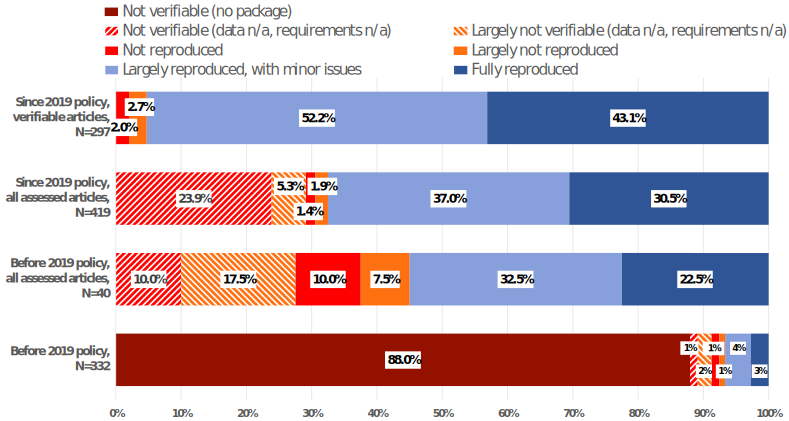Overall reproducibility
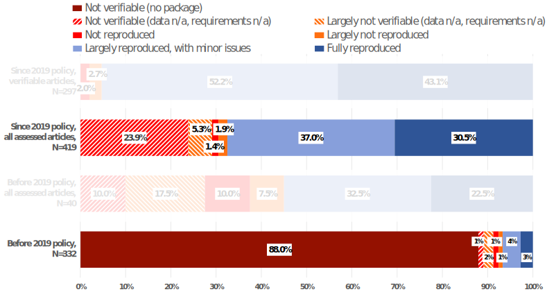Overall reproducibility
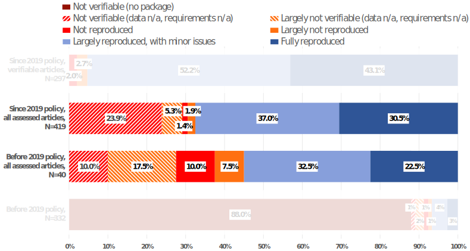Overall reproducibility
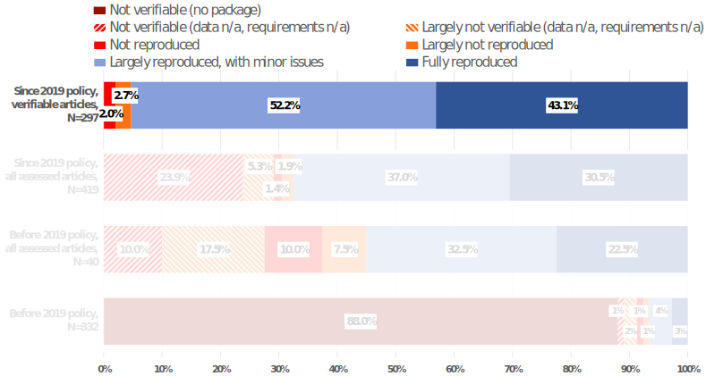Overall reproducibility
Overall reproducibility by journal department
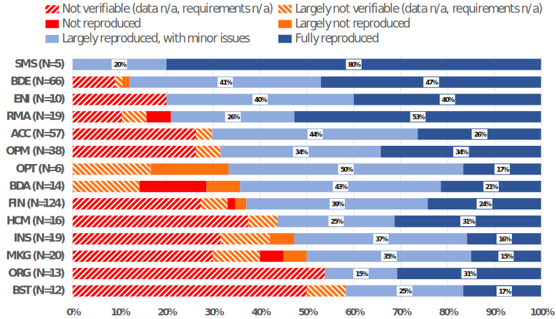Overall reproducibility by journal department
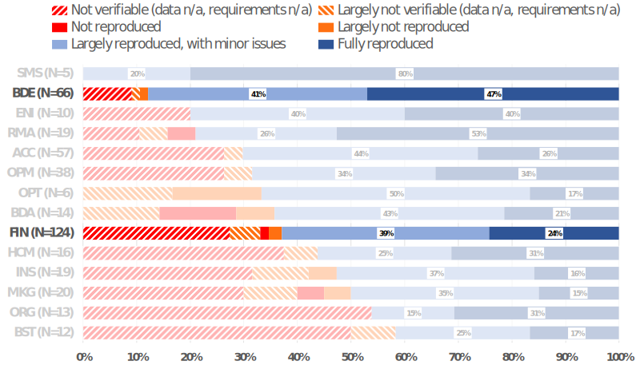Overall reproducibility by study type / method
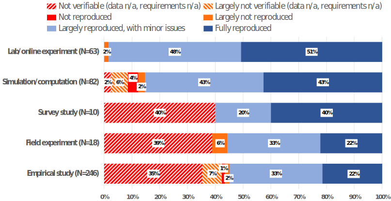Variation in reproducibility
Linear probability model:
Largely or fully reproduced (binary)
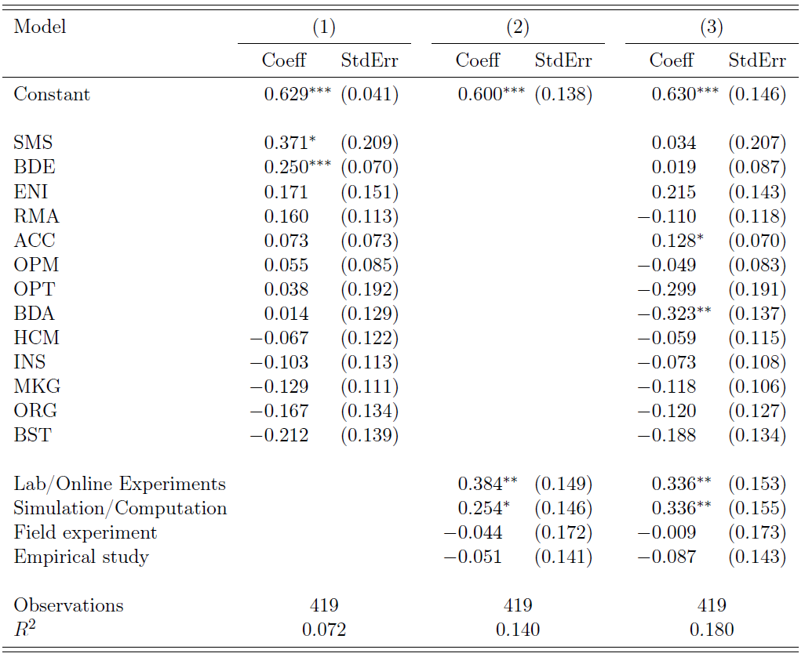
Variation in reproducibility
Linear probability model:
Largely or fully reproduced (binary)
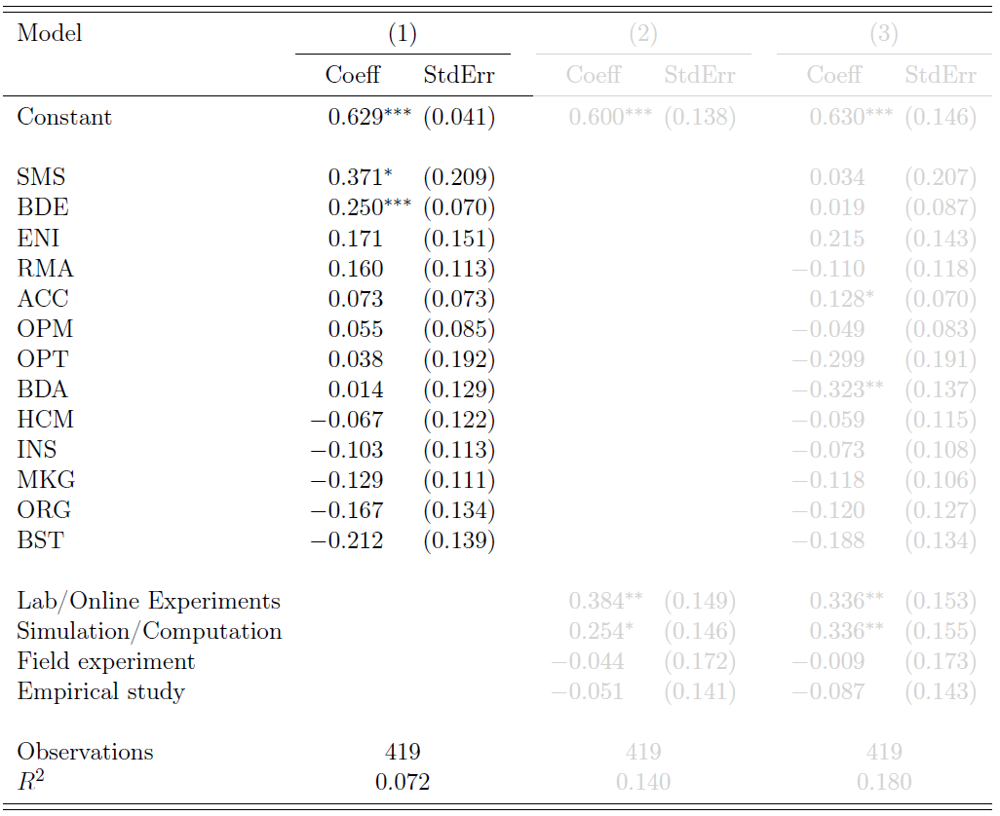
Variation in reproducibility
Linear probability model:
Largely or fully reproduced (binary)
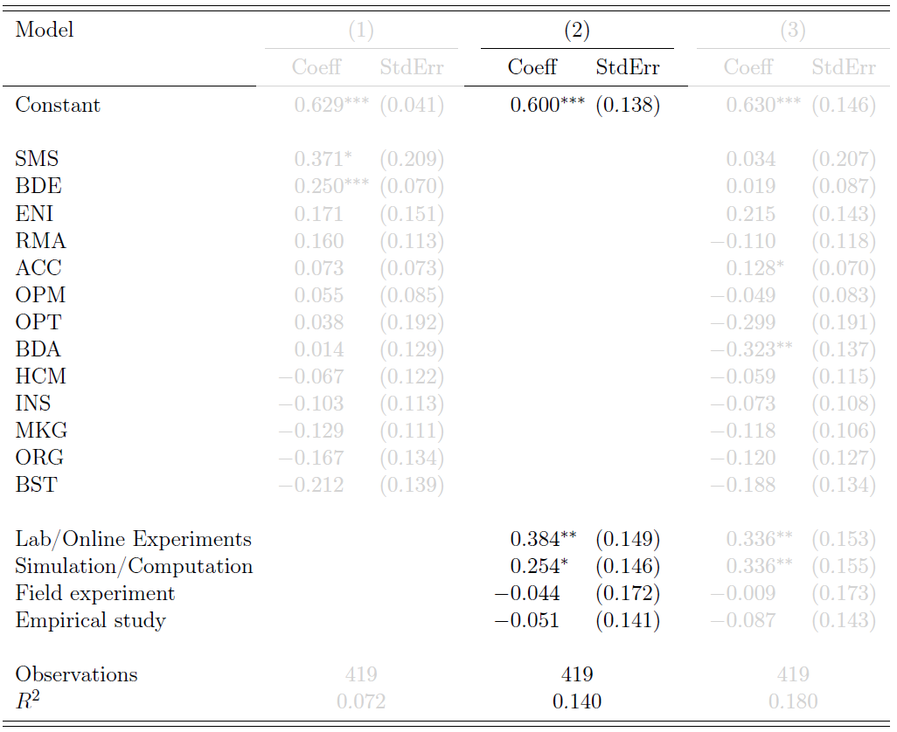
Variation in reproducibility
Linear probability model:
Largely or fully reproduced (binary)
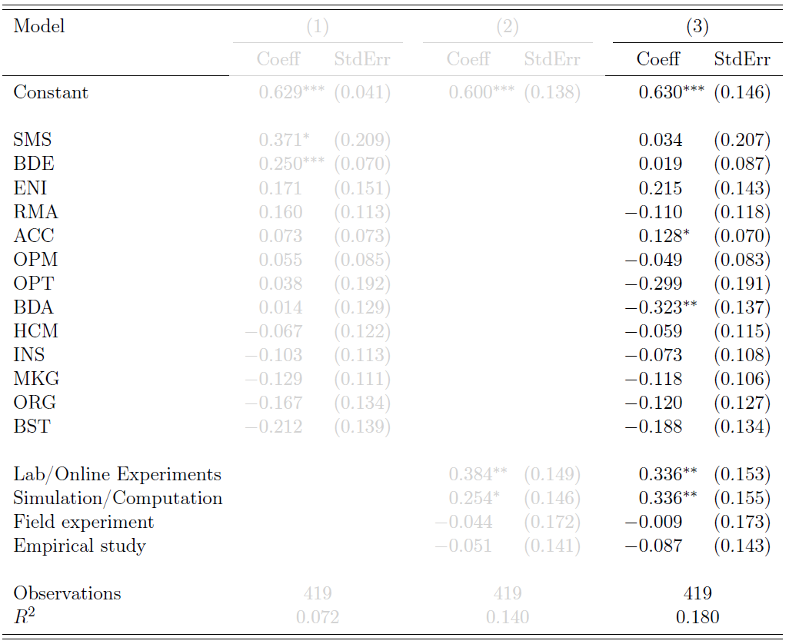
Variation in reproducibility
Linear probability model:
Largely or fully reproduced (binary)
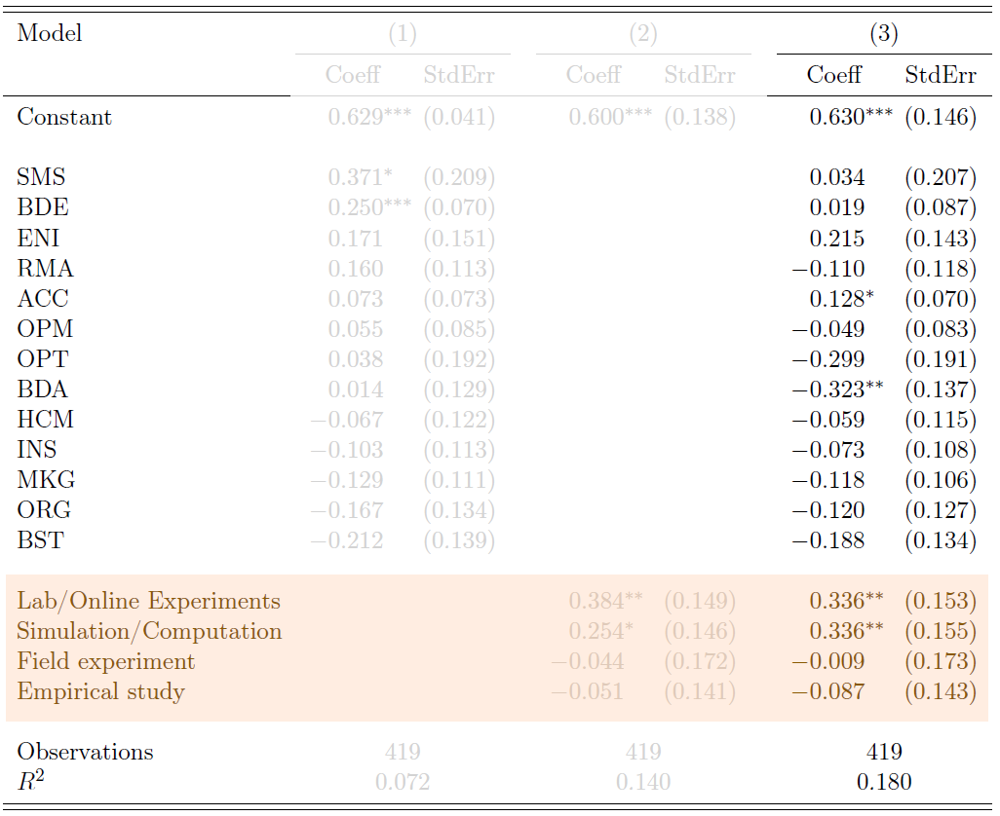
Reasons for non-reproducibility
Reasons for non-reproducibility
Reasons for non-reproducibility
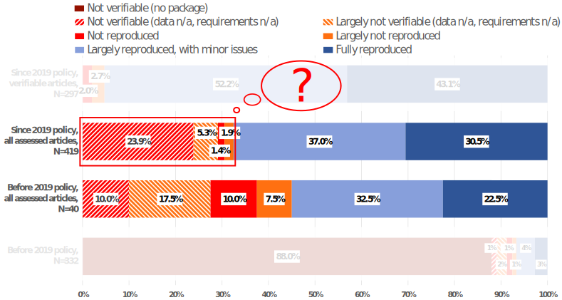Reasons for non-reproducibility
No availability or access to the dataset seems to be the main reason for non-reproducibility.
Exploratory results
Author and article characteristics
Reviewer characteristics
Determinants of reproducibility
Data availability
No data: 14.87%
reproduced (n = 195)Partial data: 44.55%
reproduced (n = 110)All data: 92.11%
reproduced (n = 355)
Determinants of reproducibility
Data availability
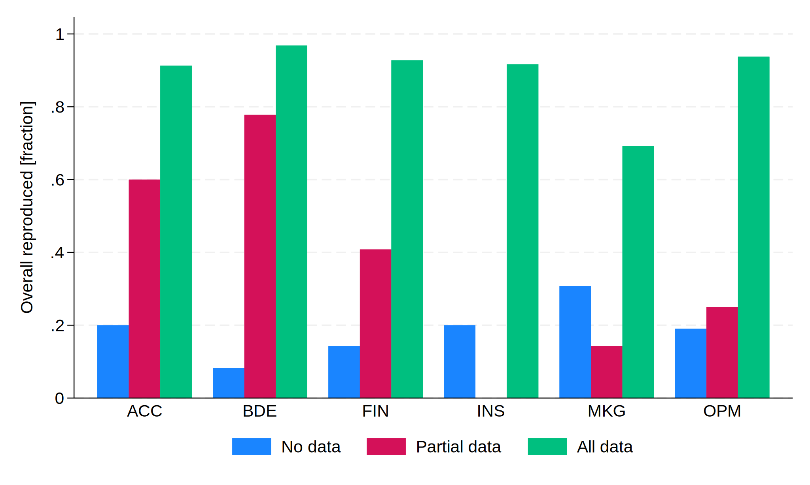
No data: 14.87%
reproduced (n = 195)Partial data: 44.55%
reproduced (n = 110)All data: 92.11%
reproduced (n = 355)
Determinants of reproducibility
Author affiliation Top 30
Top author affiliation: 67.40% reproducible
Non-top author affiliation: 65.52% reproducible
(t-test: p = 0.670, Fisher exact test: p = 0.693)
Number of different software (\(\rightarrow\) complexity)
- One software used: 70.43% reproducible (n = 301)
- More than one software used: 60.17% reproducible (n = 118)
(t-test: p = 0.044, Fisher exact test: p = 0.049)
Determinants of reproducibility
Reviewer affiliation Top 30
- only 14% of reviewers from Top 30 schools, but 50% of articles (at least one author)
- Reviewer affiliation does not predict reproducibility (p = 0.811)
Reviewer seniority
| Position | Mean (%) |
|---|---|
| PhD student (N=119) | 63.9 |
| Assistant Prof (N=271) | 63.5 |
| Associate Prof (N=173) | 64.2 |
| Professor (N=95) | 57.9 |
| Other (N=31) | 51.6 |
Determinants of reproducibility
Time spent on reproduction
Mean time spent (only if largely or fully reproduced):
| ACC | BDA | BDE | BST | ENI | FIN | HCM | INS | MKG | OPM | OPT | ORG | RMA | SMS | Total |
|---|---|---|---|---|---|---|---|---|---|---|---|---|---|---|
| 12.2 | 13.8 | 6.5 | 11.7 | 5.2 | 12.3 | 9.1 | 5.9 | 3.7 | 6.6 | 13.2 | 5.9 | 8.0 | 3.7 | 9.0 |
| Study type / method | Mean |
|---|---|
| Lab/online exper. | 5.7 |
| Field experiment | 5.5 |
| Survey | 3.9 |
| Empirical data | 11.0 |
| Theory/Simulation | 11.2 |
Determinants of reproducibility
Time spent on reproduction
Mean time spent (only if largely or fully reproduced):
| ACC | BDA | BDE | BST | ENI | FIN | HCM | INS | MKG | OPM | OPT | ORG | RMA | SMS | Total |
|---|---|---|---|---|---|---|---|---|---|---|---|---|---|---|
| 12.2 | 13.8 | 6.5 | 11.7 | 5.2 | 12.3 | 9.1 | 5.9 | 3.7 | 6.6 | 13.2 | 5.9 | 8.0 | 3.7 | 9.0 |
| Study type / method | Mean |
|---|---|
| Lab/online exper. | 5.7 |
| Field experiment | 5.5 |
| Survey | 3.9 |
| Empirical data | 11.0 |
| Theory/Simulation | 11.2 |
But: time spent has no sig. effect on overall reproducibility (OLS, p = 0.990)
Estimating reproducibility
What proportion of Management Science articles under the current Data & Code disclosure policy (…) can be fully reproduced with the available replication materials?
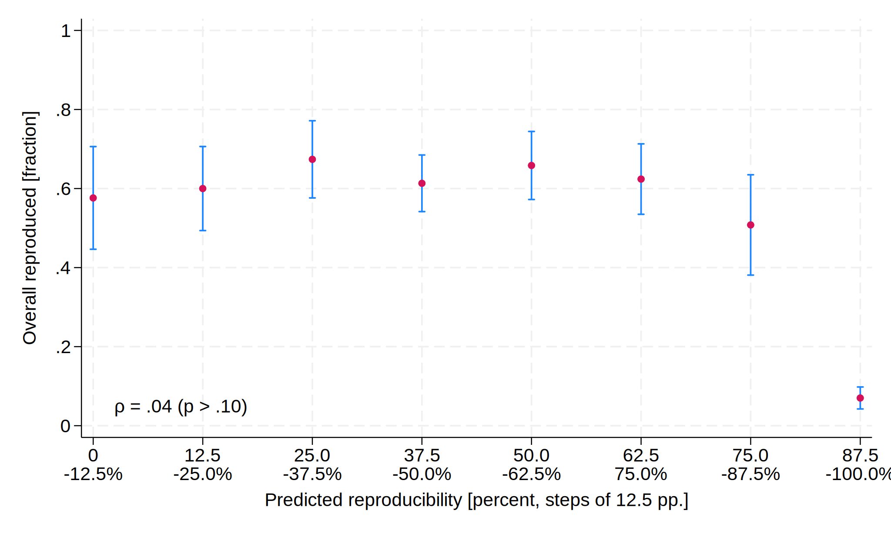
Estimating reproducibility
What proportion of Management Science articles under the current Data & Code disclosure policy (…) can be fully reproduced with the available replication materials?
\(\rightarrow\) estimated reproducibility does
not predict actual reproducibility
(reviewer level)
Estimating reproducibility
What proportion of Management Science articles under the current Data & Code disclosure policy (…) can be fully reproduced with the available replication materials?
- Mean estimated reproducibility since 2019 policy: 72.61% (StdDev: 19.40)
Estimating reproducibility
What proportion of Management Science articles under the previous policy (…) can be fully reproduced with the available replication materials?
- Mean estimated reproducibility before 2019 policy: 48.20% (StdDev: 22.52)
What proportion of Management Science articles under the current Data & Code disclosure policy (…) can be fully reproduced with the available replication materials?
- Mean estimated reproducibility since 2019 policy: 72.61% (StdDev: 19.40)
Estimating reproducibility
Estimated reproducibility before/since 2019 policy
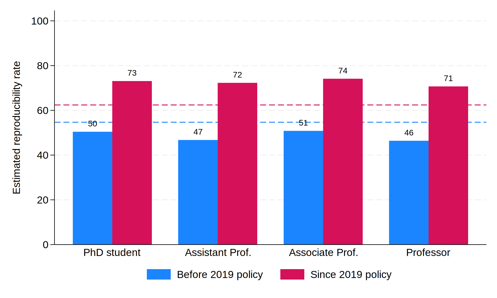Estimating reproducibility
Estimated reproducibility before/since 2019 policy
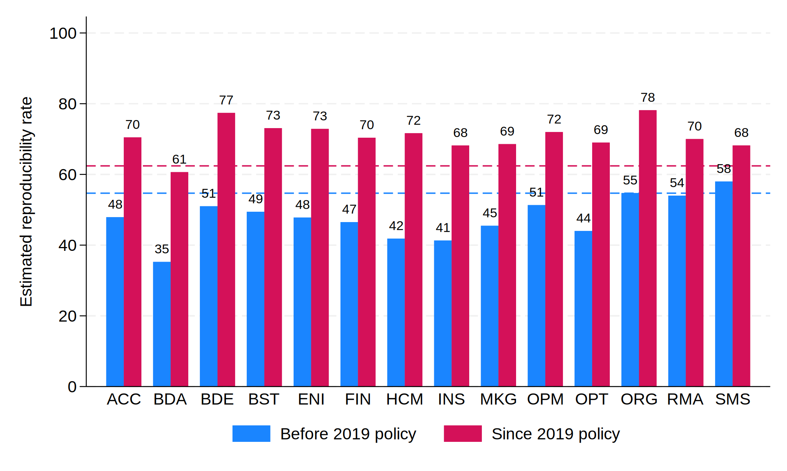Estimating reproducibility
Prediction errors by department (since 2019 policy)
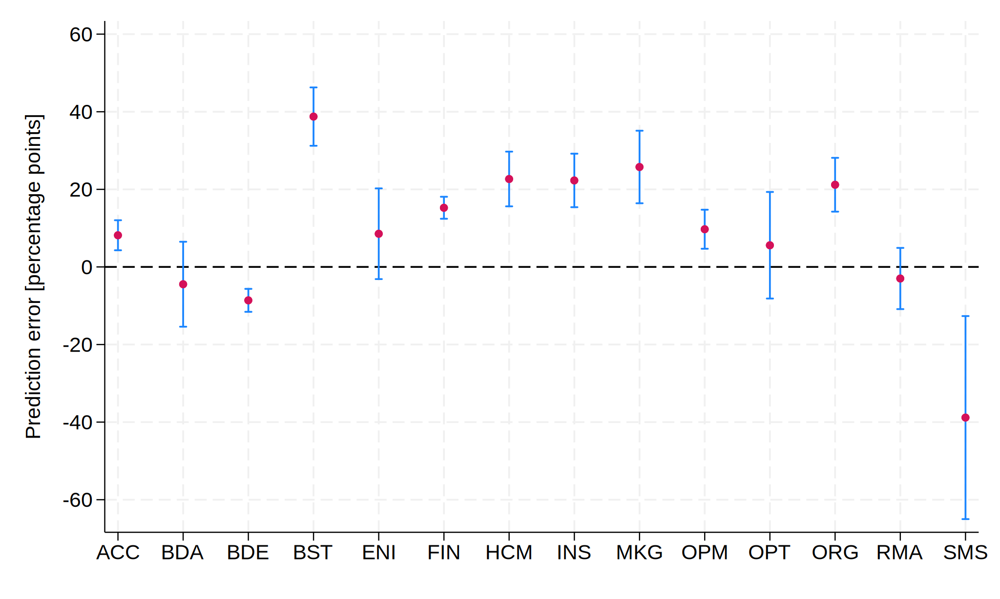Estimating reproducibility
Prediction errors by department (since 2019 policy)
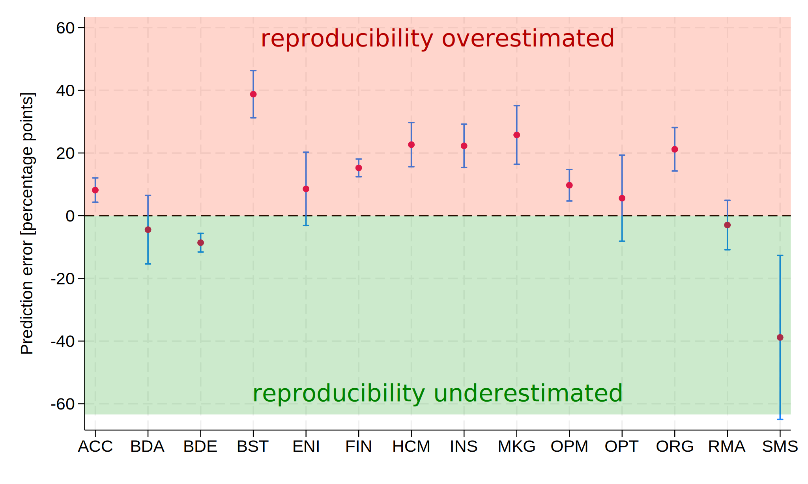Reproducibility and replicability
Does reproducibility imply replicability?
\(f_R(data, code) = \beta\) \(\Longrightarrow\) \(f_R(data', code'(method)) \approx \beta\) ?
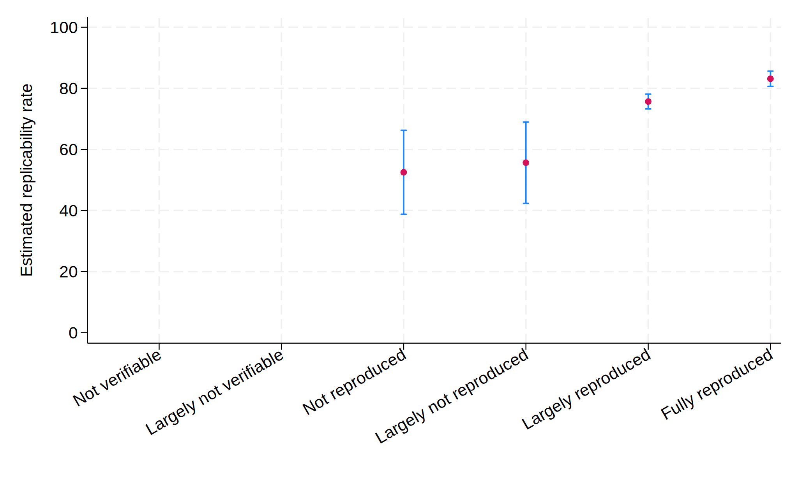
Reproducibility and replicability
Does reproducibility imply replicability?
\(f_R(data, code) = \beta\) \(\Longrightarrow\) \(f_R(data', code'(method)) \approx \beta\) ?
Conclusion
Conclusion
- Estimate reproducibility in Management Science, overall and across different fields:
- 68% of articles since 2019 policy can be fully or largely reproduced.
- Reproducibility rates differ between 40% and 100%:
e.g., BDE 88% vs. FIN 63%
Conclusion
- Estimate reproducibility in Management Science, overall and across different fields:
- 68% of articles since 2019 policy can be fully or largely reproduced.
- Reproducibility rates differ between 40% and 100%:
e.g., BDE 88% vs. FIN 63%
- Compare reproducibility before/since policy:
- Only 7% of articles before 2019 policy can be reproduced.
Conclusion
- Estimate reproducibility in Management Science, overall and across different fields:
- 68% of articles since 2019 policy can be fully or largely reproduced.
- Reproducibility rates differ between 40% and 100%:
e.g., BDE 88% vs. FIN 63%
- Compare reproducibility before/since policy:
- Only 7% of articles before 2019 policy can be reproduced.
- Identify main reasons for non-reproducibility:
- no access to the data set (88%, proprietary / NDA / privacy / subscription).
Future directions
- experimental methods \(\longleftrightarrow\) financial economics
- credibility and replicability in (social science) research
Future directions
- credibility and replicability in (social science) research
- experimental methods \(\longleftrightarrow\) financial economics
- innovative methods and research designs
- e.g., crowd-science approaches and meta analyses
- address external validity concerns
- e.g., by conducting artefactual and framed field experiments
(e.g., experiments with financial professionals)
- e.g., by conducting artefactual and framed field experiments
- novel questions originating from recent developments in the field
- e.g, cryptocurrency markets; how the COVID-19 crash affected decision making; deception and social norms; attention and motivated information acquisition; competitiveness and speculation; …
Conclusion
- Estimate reproducibility in Management Science, overall and across different fields:
- 68% of articles since 2019 policy can be fully or largely reproduced.
- Reproducibility rates differ between 40% and 100%:
e.g., BDE 88% vs. FIN 63%
- Compare reproducibility before/since policy:
- Only 7% of articles before 2019 policy can be reproduced.
- Identify main reasons for non-reproducibility:
- no access to the data set (88%, proprietary / NDA / privacy / subscription).
Thanks!
christoph.huber@wu.ac.at chr-huber.com
Appendix
Disclosure Policies
AEA since 2004, JPE & Econometrica followed; QJE since 2016
Code/data disclosure mandatory in:
- 10 out of 24 journals for UT Dallas business school ranking (2 have a data editor)
- 17 of Top-25 Economics journals (SCimago) (6 have a data editor)
- 4 of Top-6 Finance Journals (data only mandatory in 1, 1 has data editor)
- Mandatory internal (e.g., AEA) or external (e.g., AJPS) verification
- Articles in journals with reproducibility policies more often cited (Höffler, 2017, AER)
- Journal data sharing policies in economics have reduced statistical significance/t-values in papers, and (suggestive evidence) decreased publication bias. (Askarov et al., 2023, JEEA)
Final Dataset: Reviewers
| N=675 | Share | Enlisted | Avg. Hours | Avg. Expertise Method (0-100) | Avg. Expertise Topic (0-100) |
|---|---|---|---|---|---|
| Professor | 14% | 21% | 13.1 | 84.3 | 60.8 |
| Assoc. Prof. | 26% | 11% | 8.3 | 83.2 | 61.5 |
| Assist. Prof. | 40% | 6% | 8.4 | 84.1 | 58.7 |
| PhD student | 16% | 1% | 9.0 | 83.8 | 59.2 |
| Other | 4% | 3% | 6.1 | 82.8 | 52.7 |
Reviewer consistency
| Fully | Largely, minor | Largely not r. | Not r. but log | Not r. | |
| Fully reproduced | 31 | ||||
| Largely reproduced, minor issues | 64 | 64 | |||
| Largely not reproduced, major issues | 6 | 22 | 7 | ||
| Not rep. but consistent w/log | 1 | 8 | 3 | 37 | |
| Not reproduced. | 2 | 6 | 14 | 13 | 18 |
- Overall, no significant differences in self-assessed expertise in methods and topics between weakly more positive and weakly more negative reviewers.
Overall reproducibility
Linear probability model: Largely or fully reproduced (binary)
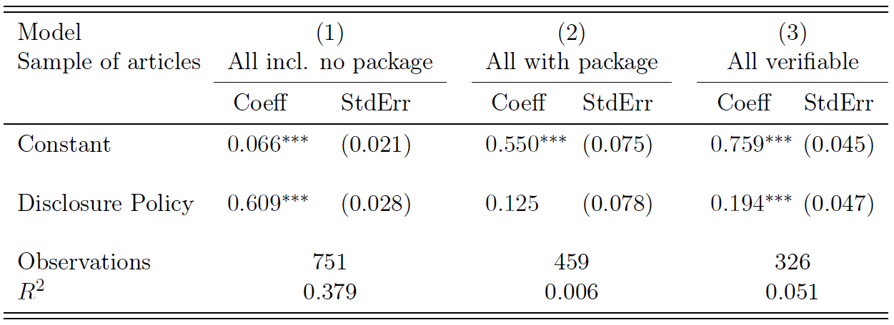Overall reproducibility
Linear probability model: Largely or fully reproduced (binary)
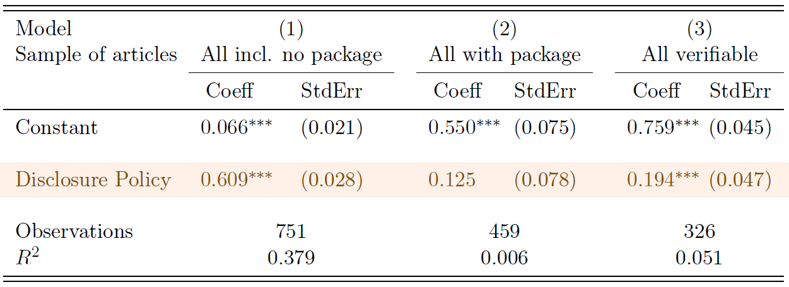Reproducibility of tables

Reproducibility of figures
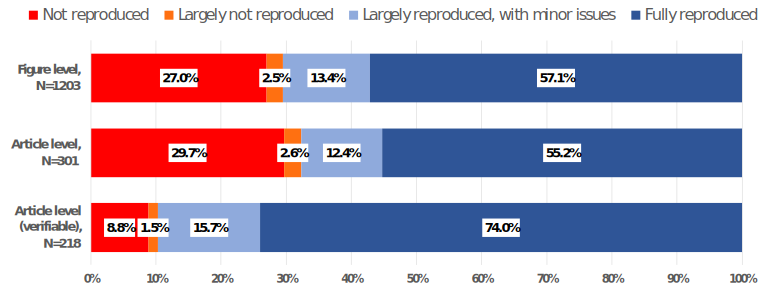Reproducibility of other results
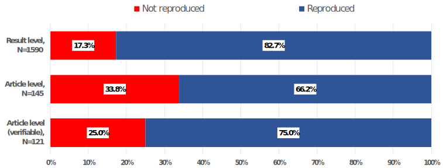Software
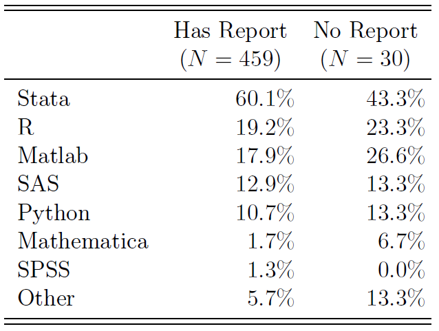Reasons for non-reproducibility
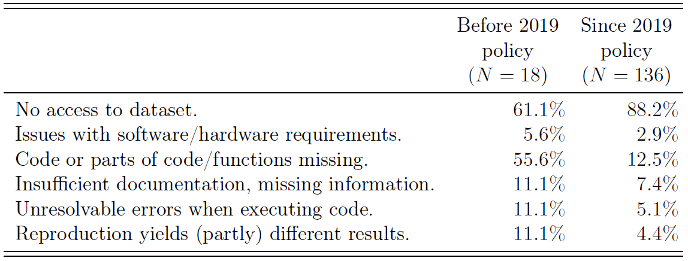Article type / method by journal department
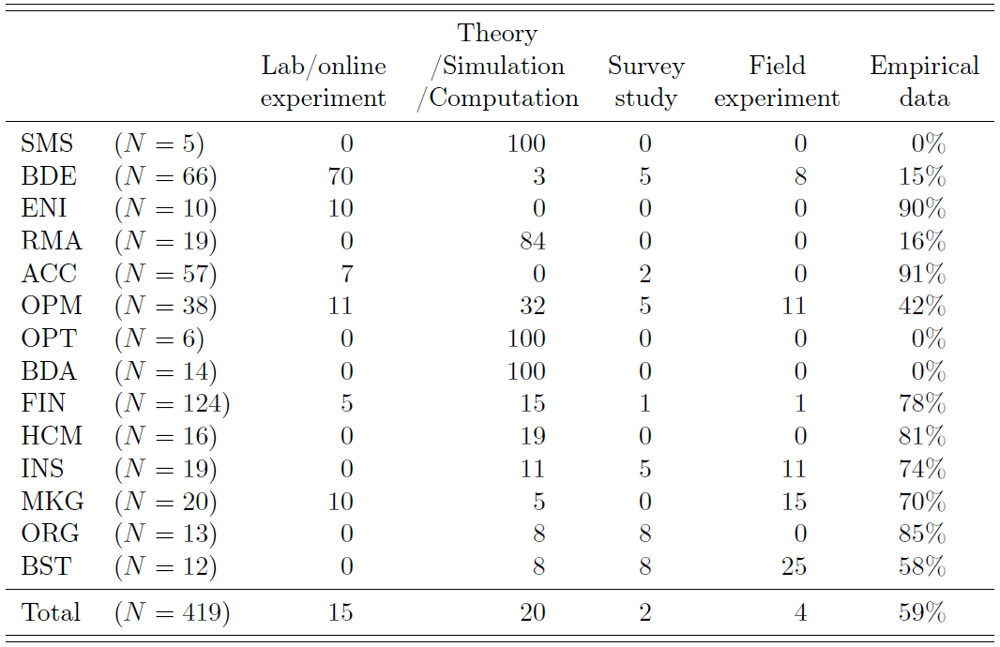Robustness
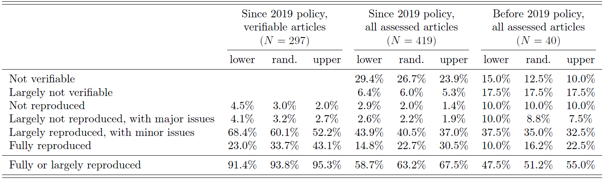Robustness
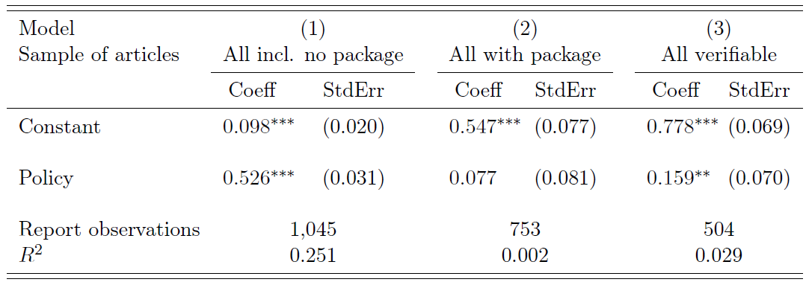Robustness
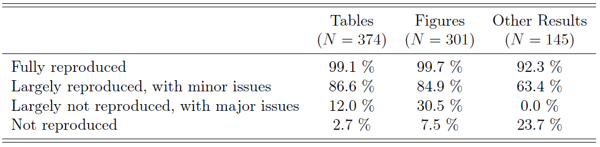Christoph Huber (WU Vienna)